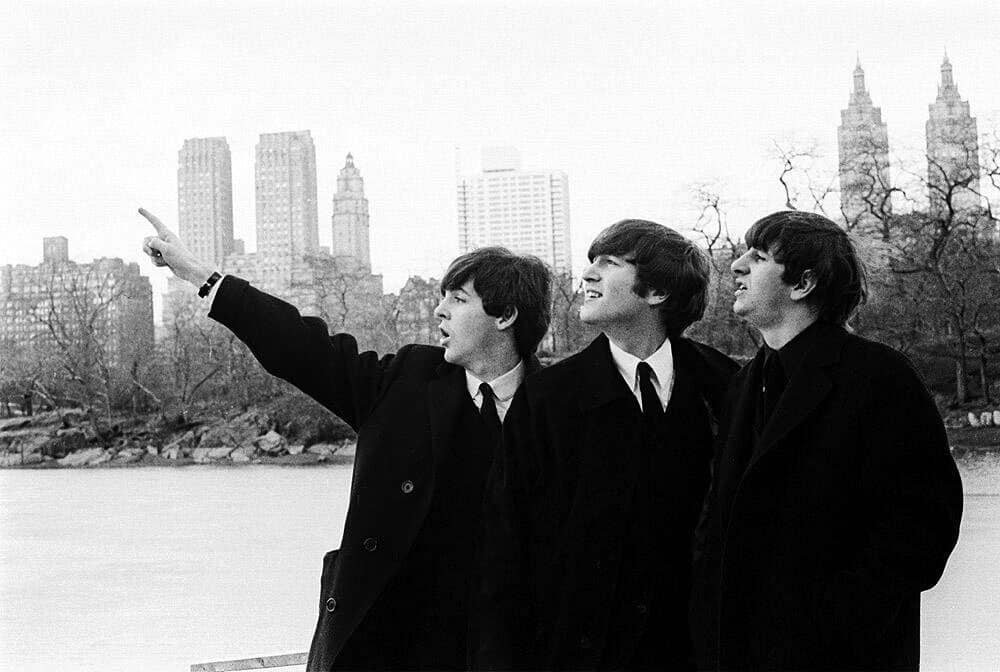
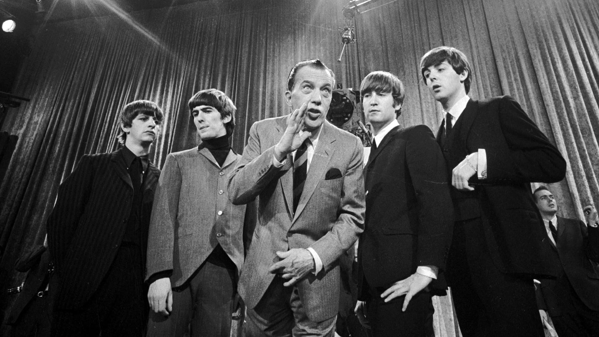
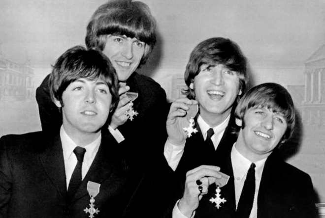
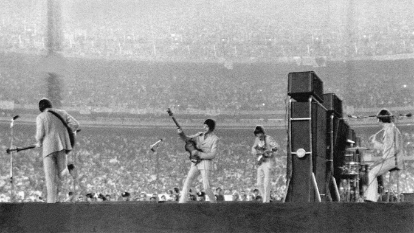

Despre trupă
The Beatles au fost o formație de muzică rock din Liverpool, Anglia, formată în 1960. Membrii trupei erau John Lennon, Paul McCartney, George Harrison și Ringo Starr. Muzica lor a avut un impact semnificativ asupra culturii și societății din anii '60 și au influențat o întreagă generație de artiști.
De-a lungul carierei lor, Beatles au lansat 13 albume de studio și au vândut peste 600 de milioane de discuri la nivel mondial. Au fost incluși în Rock and Roll Hall of Fame în 1988 și au câștigat multiple premii Grammy.
Deși trupa s-a desființat în 1970, muzica lor continuă să fie ascultată și apreciată în întreaga lume.
Artiști
John Lennon (1940-1980) a fost cântăreț, compozitor și activist social. El a fost principalul compozitor al trupei, scriind hituri precum "Imagine", "Instant Karma!" și "Jealous Guy".
Paul McCartney (născut în 1942) a fost cântăreț, compozitor și multi-instrumentist. El a compus multe dintre cele mai cunoscute piese ale trupei, precum "Hey Jude", "Let It Be" și "Yesterday".
George Harrison (1943-2001) a fost cântăreț, compozitor și multi-instrumentist. El a compus câteva dintre cele mai cunoscute piese ale trupei, precum "Something" și "Here Comes the Sun".
Ringo Starr (născut în 1940) a fost bateristul trupei. El a cântat lead vocal la câteva piese ale trupei, precum "Yellow Submarine" și "With a Little Help from My Friends".
Albume
- Please Please Me (1963)
- With the Beatles (1963)
- A Hard Day's Night (1964)
- Beatles for Sale (1964)
- Help! (1965)
- Rubber Soul (1965)
- Revolver (1966)
- Sgt. Pepper's Lonely Hearts Club Band (1967)
- The Beatles (White Album) (1968)
- Yellow Submarine (1969)
- Abbey Road (1969)
- Let It Be (1970)
Galerie foto
În anii '60, The Beatles au avut o serie de hituri care au devenit imnuri ale acelei perioade, precum "Love Me Do", "A Hard Day's Night", "Help!", "Yesterday" și "Hey Jude".
Trupa a câștigat patru premii Grammy și a vândut peste 600 de milioane de discuri la nivel mondial. În plus, Beatles au influențat puternic cultura populară a anilor '60 și au devenit un simbol al mișcării de pace.
The Beatles s-au destrămat în 1970, iar membrii lor au urmat cariere solo de succes. Cu toate acestea, muzica și impactul lor cultural continuă să inspire și să influențeze artiști de astăzi.
În 1962, Ringo Starr l-a înlocuit pe Pete Best și trupa și-a semnat primul contract cu casa de discuri EMI. Primul lor album, "Please Please Me", a fost lansat în același an și a avut un succes uriaș în Marea Britanie.
În 1964, The Beatles au făcut un turneu în Statele Unite și au devenit un fenomen global. Aproape fiecare concert la care au participat a fost vândut complet, iar fanii erau cunoscuți pentru isteria pe care o manifestau la apariția trupei.

The Beatles au continuat să domine topurile muzicale și să lanseze hituri de succes până în 1970, când s-au despărțit oficial. De-a lungul carierei lor, trupa a vândut peste 600 de milioane de înregistrări la nivel mondial și a influențat semnificativ cultura și muzica populară.
Mai multe
Puteți alege să vă testați cunștințele despre trupa the Beatles într-un quiz sau să jucați un joc de tip labirint cu trupa The Beatles.